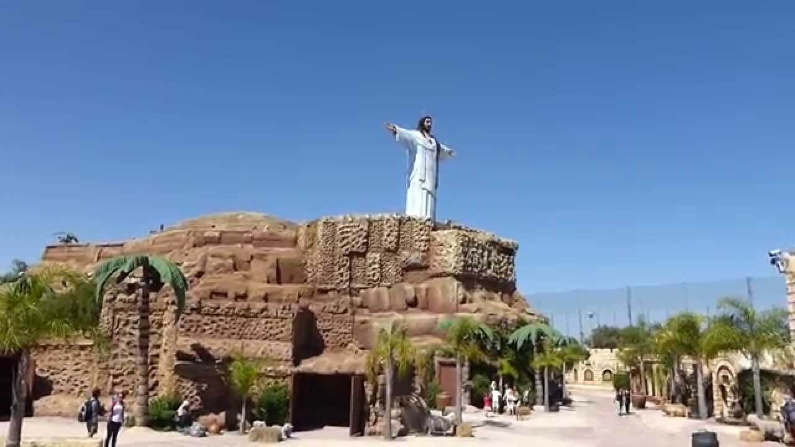
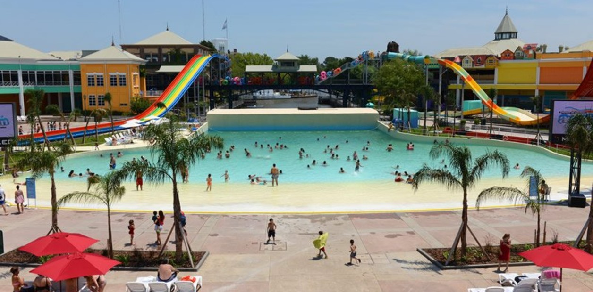

¿QUÉ PODEMOS HACER EN LA GRAN CIUDAD?
ECOPARQUE DE LA CIUDAD DE BUENOS AIRES
El Ecoparque es un centro para la conservación de especies autóctonas en peligro de extinción que colabora activamente con la recuperación de los ecosistemas y el enriquecimiento de la biodiversidad argentina, abriendo sus puertas para promover la educación ambiental. Es un paseo ideal para pasar el día en plena Ciudad pero rodeados por plantas, animales y mucho verde. Son 16,7 hectáreas que ofrecen una gran variedad de propuestas. Desde visitas guiadas, charlas en el domo de energías renovables, un exploratorio del Río de la Plata, hasta una plaza de agua, un carrousel, animatrónicos interactivos, o experiencia 4D Ecoevolución. Vas a caminar por senderos con las plantas nativas y mariposas. También te van a sorprender los mamíferos autóctonos -como carpincho, tapir, guanaco, cai de las yungas, corzuela, mara, coipo- y las aves nativas -como ñandú, flamenco austral, chajá, gavilán mixto, cardenal común, picaflor verde, cóndor andino, coscoroba, tordo, picabuey, biguá. Hay locales gastronómicos en los que podés desayunar, almorzar o merendar.
TIERRA SANTA
Tierra Santa es el primer parque temático religioso de América Latina y un lugar de encuentro para el cristianismo, judaísmo e islamismo. Un puente cultural e histórico, que representa las costumbres de cada religión y transporta al visitante dos mil años al pasado a la antigua Jerusalén. Ha sido inaugurada, bendecida y declarada "Centro de evangelización único, de enriquecimiento cultural y espiritual" por Su Santidad Francisco. "De interés Nacional por su Relevancia Religioso y Cultural" por la Presidencia de la Nación. "De Interés Turístico" por la Secretaria de Turismo de la Nación. "De Interés Educativo" por el Gobierno de la Ciudad de Buenos Aires.
AQUAFAN
En los días más calurosos, podemos disfrutar del mejor parque acuático en familia. En este parque para todas las edades, hay toboganes para los más grandes y juegos para los más peques. Cuentan con patio de comidas, reposeras, baños y vestidores. No te olvides de llevar tu mate.